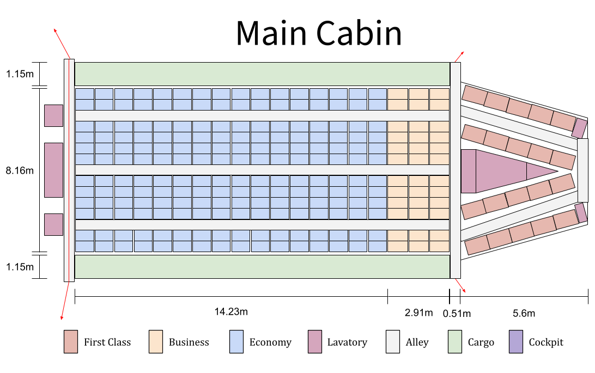
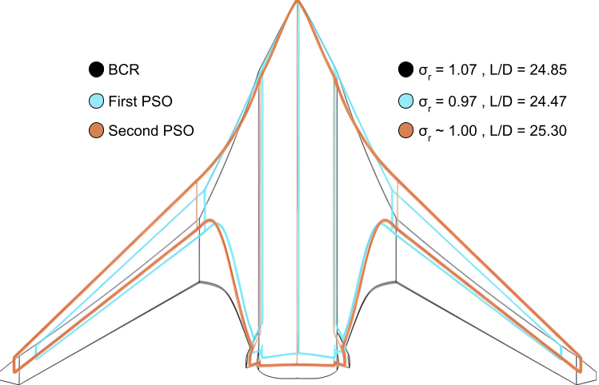
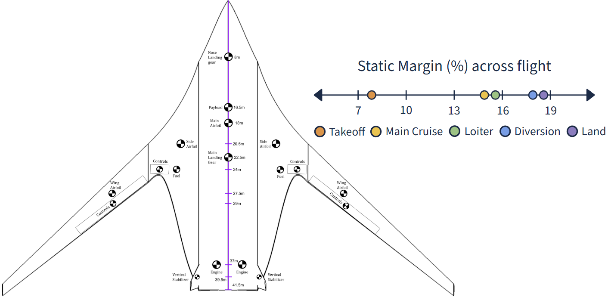

Manta is a conceptual Blended Wing Body (BWB) aircraft designed for ultra-high fuel efficiency in the 250-passenger long-haul market. By using the fuselage as the primary lifting body, it achieves a cruise L/D of 25.30.
Key Specifications (CoDR Configuration)
| Parameter | Value |
|---|---|
| Range | 7,400 nmi |
| Cruise Mach | 0.85 @ 40,000 ft |
| Capacity | 250 (3-class) |
| Wingspan | 64.67 m (Code E compliant) |
| Aspect Ratio | 5.03 |
| Cruise L/D | 25.30 |
| MTOW | 1,435,394 N (~146,370 kg) |
| CASM | $0.0873 |
| Engines | 2 × aft high-bypass (BPR 9.1) with BLI |
Aircraft Concept

Cabin Layout

Design Analysis & Optimization
Master Script: Integrated OpenVSP, AVL, weights, structures, and cost for rapid iteration.
Particle Swarm Optimization (PSO)
Gradient-free PSO maximized cruise L/D subject to stress and stability constraints.
Result: L/D improved from 24.85 to 25.30.

Monte Carlo Sensitivity Analysis
Latin Hypercube sampling (±40%) identified key drivers: aspect ratio for L/D, chord for cost.
Validated final geometry and ruled out folding wings.
